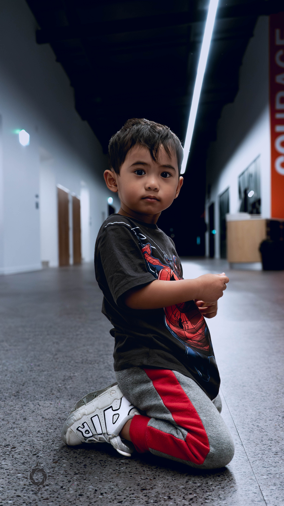
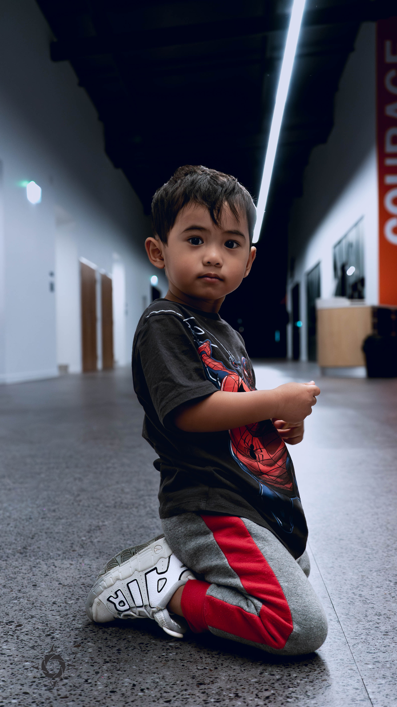

Creative Corner
Photography • Visual Storytelling • Exploration
Beyond the point-and-shoot nature, I find joy when a photograph evokes, piques imaginations and shares untold stories. Whether it's the subtle emotion in a portrait, the grandeur of a landscape, or the candidness of a street scene, each image is a narrative waiting to be discovered. Dive into this curated collection and explore the world through my lens. Let the stories unfold and the visuals bring a fresh perspective.
📷 Photo Album

 

Field & Sky